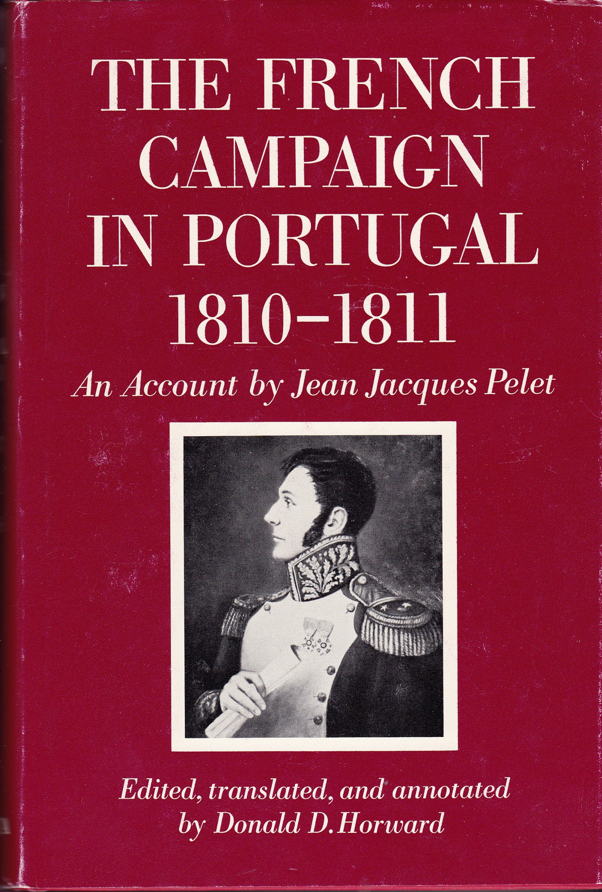
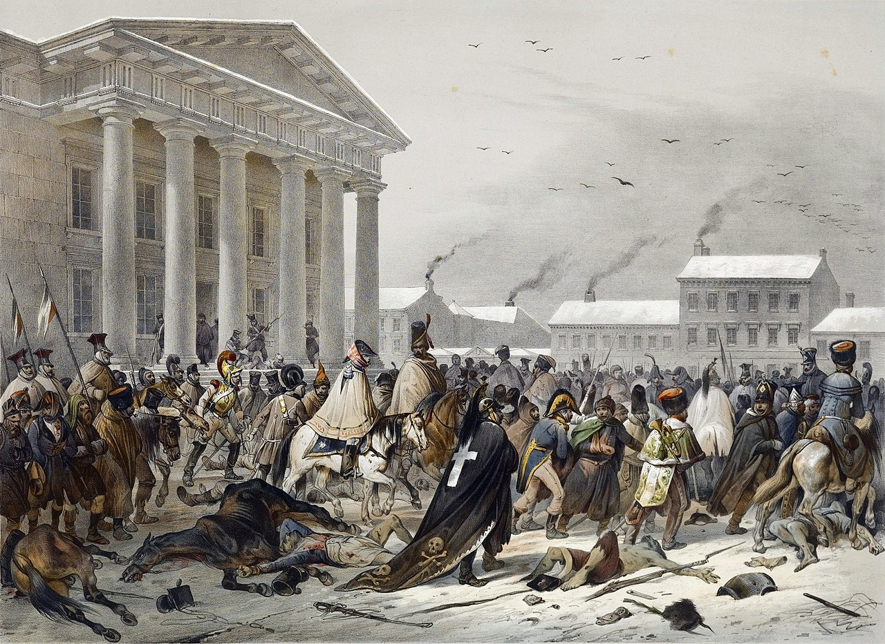
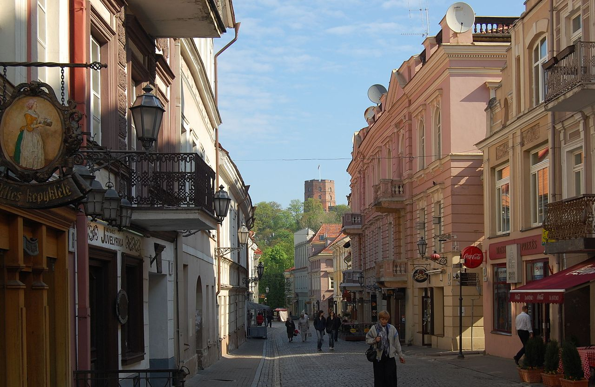
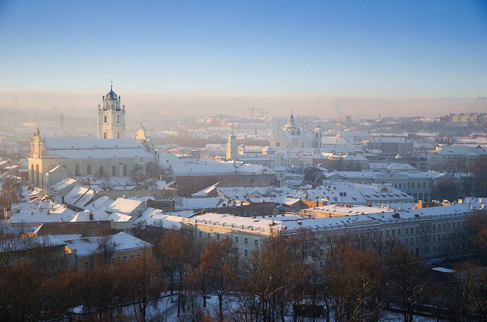
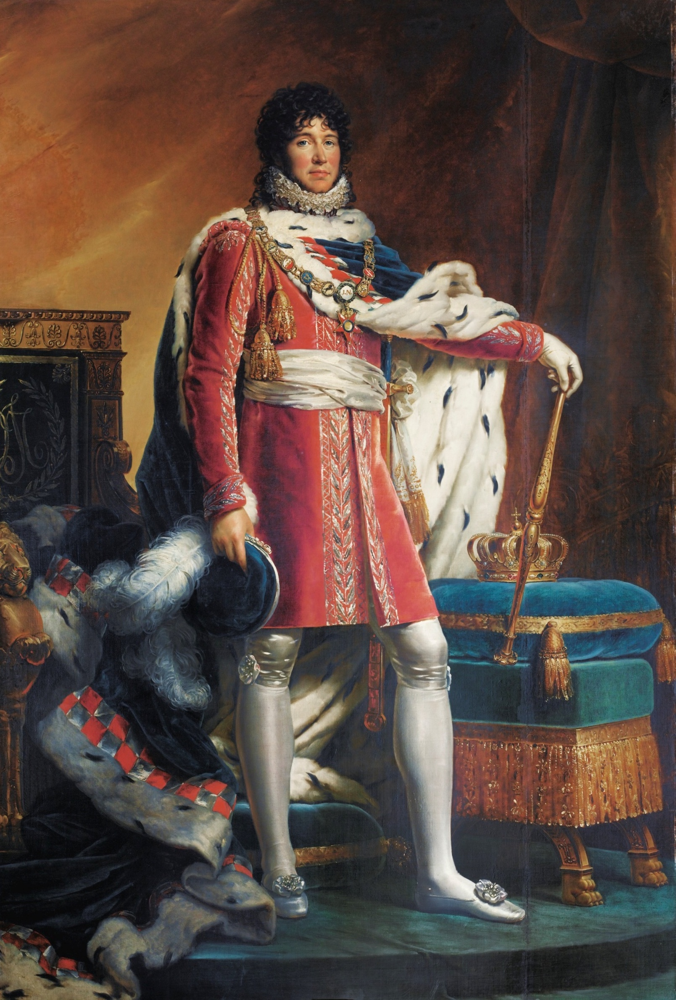

커피 한 잔과 케익 한 조각 - 약속의 도시 빌나
게시: 2021-12-06T06:30:55+09:00
나폴레옹이 마차의 말을 교체한 뒤 떠나버린 다음 날인 12월 7일 오후, 좁은 빌나 성문을 통해 터벅터벅 걸어들어오는 사람들이 있었습니다. 이들은 다 뜯어지고 꾀죄죄한 옷차림에 적어도 몇 주간은 씻지 않은 것 같은 몰골을 하고 있었는데, 마치 야만인들이 문명인 세계로 온 것처럼 번화한 거리를 두리번거렸습니다. 몇몇 시민들이 이들의 몰골을 보고 놀라서 수군거렸지만 이들은 영업 중인 카페를 발견하자 믿을 수 없다는 듯이 쳐다보다 카페에 들어가서 자리에 앉아 커피와 케익을 주문했습니다. 그 일행 중 하나가 펠레(Jean-Jacques Germain Pelet-Clozeau) 대령이었습니다. 그는 나중에 그 경험에 대해 이렇게 썼습니다. "우리에겐 모든 것이 차분하게 정돈된 도시를 보는 것이 놀라울 정도로 사치스러운 경험이었다. 거리로 난 창문을 통해서는 숙녀들이 보였다."

(펠레 대령은 프랑스 남부인 툴루즈 출신으로서, 원래 자연과학을 배우는 대학생이었다가 1799년 22세의 나이로 입대하여 부사관으로 군 생활을 시작했습니다. 가방끈이 길다보니 곧 소위로 승진하여 공병대에서 일했는데, 이탈리아 전선에서 마세나의 눈에 들어 그의 참모가 됩니다. 주로 마세나를 따라다니며 군 생활을 했기 때문에 포르투갈-스페인 지역에서 많이 활약했습니다. 그는 1811년 지지부진한 마세나의 포르투갈 작전에 대해 변명을 할 전령으로 나폴레옹에게 보내지는데, 화가 나서 펄펄 뛰는 나폴레옹에게 마세나의 입장을 차근차근 잘 설명한 덕분에 마세나도 체면을 살렸고 그도 대령으로 승진했다고 합니다. 그는 러시아에서는 네 원수 밑에서 싸웠고, 크라스니 전투에서 드네프르 강을 건너자는 아이디어도 펠레 대령이 낸 것이라고 합니다. 그는 부르봉 왕가로부터 우대를 받았음에도 1815년 나폴레옹이 백일천하를 일으키자 즉각 나폴레옹 편에 붙었고, 결국 예비역으로 내몰리게 되었습니다. 하지만 1830년 7월 혁명 이후 계속 승승장구하여 요직을 두루 맡았고 귀족 지위에도 올랐으며, 크림 전쟁에서 나폴레옹 3세의 군사 고문으로 일하는 등 활발하게 활동하며 81세까지 장수했습니다.)

(빌나 시청 앞을 지나 퇴각하는 그랑다르메의 모습입니다. 빌나, 그러니까 빌뉴스(Vilnius)는 바빌론에 비유되는 대도시로서 폴란드인, 독일인, 리투아니아인, 러시아인, 유태인, 심지어 투르크인 등 다양한 사람들이 모여 다양한 언어를 사용했으며 상업과 교육, 문화가 발달한 발트해 연안의 대도시였습니다. 17세기의 러시아-폴란드 전쟁, 그리고 18세기 초의 러시아-스웨덴 전쟁에서 여러 번 약탈되는 등 큰 피해를 입었고, 특히 18세기 중반까지 반복적으로 페스트로 인한 인구 감소를 겪었지만, 19세기 초 나폴레옹이 입성할 때에도 인구가 6만에 가까웠으며, 러시아 전체에서 3번째로 큰 도시였습니다.) 이렇게 몇 달 만에 카페에서 커피 한 잔의 여유를 즐기며 자신이 살아서 지옥을 빠져나왔다는 것을 실감하는 사람도 있었지만, 그리와(Charles-Pierre-Lubin Griois) 대령 같은 경우는 좀더 실속을 차리는 입장이었습니다. 그는 재빨리 호텔을 찾아 방을 잡고는 빵과 버터, 고기와 감자, 그리고 스페인산 와인 1병으로 된 식사를 주문했습니다. 그는 누가 비웃더라도 바로 이 때가 인생 전체에서 가장 행복했던 순간이라고 회고했습니다. 점점 더 많은 사람들이 빌나 시내로 들어왔는데, 이 꾀죄죄하고 게걸스러운 손님들을 처음에는 어리둥절하며 맞이하던 가게 주인들은 곧 사태를 파악했습니다. 외젠의 제4 군단의 생존자 중 하나였던 체사레 드 로지에(Cesare de Laugier)는 이렇게 적었습니다. "주민들이 처음에는 우리를 보고 놀라더니, 나중에는 공포에 질렸다." 많은 상점 주인들이 가게 문을 닫고 서둘러 귀가한 뒤 대문과 창문을 걸어 잠궜습니다.

(그리와 대령은 프랑스 동부인 브르고뉴 지방의 브장송(Besançon) 출신으로서 나폴레옹보다 3살 어렸습니다. 열혈 왕당파 아버지를 두었지만 혁명 이후 20세의 나이에 샬롱-쉬르-마른 포병학교(école d'artillerie de Châlons-sur-Marne)를 졸업하고 포병 장교로 군 생활을 시작했습니다. 그는 계속 이탈리아 방면군에서 활동했고, 그래서 1809년에 외젠의 이탈리아군이 오스트리아를 침공할 때에야 중앙무대에서 활약하기 시작했습니다. 이탈리아에서의 목가적인 군생활에 익숙하던 그가 러시아에서 겪었던 일은 큰 트라우마로 남았는지, 그는 나폴레옹으로부터 귀족 작위도 받는 등 꽤 우대받았으나 백일천하에 가담하지 않았고, 또 군 생활에도 미련을 두지 않았습니다. 그는 장교직을 1815년 지방 고급 공무원직으로 전환하여 바꾼 뒤 조용히 살다가 67세의 나이로 사망했습니다.)

(빌나의 구도심지 거리 모습입니다. 빌나의 구도심지는 북유럽 전체에서 몇 안되는, 중세 시절부터의 모습을 간직한 거리라고 합니다.) 신병 2개 사단을 혹한 속으로 내몰아 동태로 만들어버린 호겐도르프도 현지 사정에 어두워서 그랬던 것 뿐 결코 무능한 행정가는 아니었습니다. 그는 철수해오는 그랑다르메의 패잔병들을 수용할 준비를 갖추었습니다. 그는 수도사들과 협의를 거친 뒤, 빌나 시내에 수만의 병력을 먹이고 재울 장소로 시내의 여러 수도원들을 지정했습니다. 그리고 시내로 들어오는 길목마다 커다랗게 포고문을 붙여서 어느어느 수도원으로 오면 거기서 수프와 고기, 그리고 따뜻한 잠자리를 제공하겠다고 알렸습니다. 또 짐마차와 대포 등의 차량을 어디에 세워두면 되는지도 세밀하게 계획해서 포병 장교에게 안내를 하도록 했습니다. 그러나 많은 장교들과 병사들은 그런 안내문을 무시하고 당장 눈 앞에 보이는 밝은 카페와 식당으로 들어갔고, 그런 곳에 자리가 꽉 차면 민간 주택의 문을 두들기며 제발 먹이고 재워달라고 구걸을 했습니다. 증언에 따르면 상당수가 폴란드계였던 빌나 주민들은 그런 사람들에게 놀라울 정도의 온정을 베풀었다고 합니다. 많은 병사들이 몸 여기저기에 동상에 걸려있었고, 그렇게 썩어가는 동상 부위에서는 끔찍한 냄새가 나는 경우가 대부분이었습니다. 몇 주 동안 빨래는 커녕 씻지도 못했고, 이질 설사로 인해 바지 뒤쪽에 오물이 묻어있는 경우도 많았습니다. 그런데도 많은 시민들이 그런 병사들을 집에 들여 먹을 것과 잠자리를 제공했습니다. 물론 그렇게 주민들에게 폐를 끼치지 않고 시키는 대로 수도원을 찾아간 병사들도 적절한 대접을 받았습니다. 다부 휘하 제7 경보병 연대의 베르트랑(Bertrand) 하사가 그런 경우였는데, 그와 그의 동료들은 수도원에서 약속된 따뜻한 식사와 숙소를 제공받았습니다. 그랑다르메는 그렇게 갈망하던 약속의 도시 빌나에서 드디어 휴식과 재편성의 기회를 맞이하는 듯 했습니다.

(현대 빌뉴스의 겨울철 전경입니다. 지금은 인구 약 60만 정도입니다.) 하지만 뮈라의 등장과 함께 그런 재편성은 이미 물 건너갔다는 것이 분명해졌습니다. 12월 8일 아침 본격적으로 밀려들어오기 시작한 그랑다르메의 패잔병들을 맞이하기 위해 호겐도르프는 직접 성문으로 나갔습니다. 오전 11시 경이 되자 총사령관인 뮈라가 베르티에와 함께 나타났습니다. 날이 워낙 춥다보니 이들도 말에서 내려 걷고 있었는데, 화려한 기병용 외투인 펠리즈(pelisse)를 입은 뮈라는 깃털이 꽃힌 거대한 털모자를 쓰고 있어서 정말 거인처럼 보였다고 합니다. 이런 제왕다운 모습과는 달리, 뮈라의 태도와 말투는 정말 쌈마이스러웠습니다. 뮈라가 숙소를 잡자 곧 마레(Maret)가 나타나 '어떤 일이 있어도 빌나를 사수하라'는 나폴레옹의 황명을 전달했습니다. 뮈라의 반응은 마레가 예상했던 것 그대로였습니다. "GR하고 자빠졌네. 싫어. 내가 이런 요강 같은 곳에서 포로가 될 수는 없지!" 아마 나폴레옹도 비슷한 대꾸를 예상했기 때문에 12월 5일 밤에 직접 뮈라에게 명령을 전하지 않았을 것입니다. 참모 전문가이자 모범생이었던 베르티에가 뮈라에게 어떤 명령을 내릴지를 묻자 뮈라는 역시 이렇게 답했다고 합니다. "뇌샤텔 공(베르티에)께서 알아서 직접 쓰시구랴. 어차피 무슨 명령을 내려야 할지는 뻔한 거 아니겠소?" 베르티에게 그래서 어떤 명령서를 발부했는지는 불분명합니다만, 무슨 내용이었든지 아무 상관없었을 것입니다. 나폴레옹이 사라진 것에 대해 장교들이나 병사들이나 나폴레옹을 원망하고 비난하는 분위기는 아니었습니다만, 확실히 극한의 상황에서도 그랑다르메를 하나로 묶어주던 구심점은 깔끔하게 사라져 버린 셈이 되었습니다. 여태까지 그래도 병사들을 다독이며 어떻게든 부대를 유지하고 한 명의 병사라도 더 살려내려고 노력하던 지휘관들과 장교들, 부사관들이 이젠 아무런 책임감이나 수치심을 느끼지 않고 부대를 버리고 각자 살 길을 찾기 시작했습니다. 물론 여전히 소속 부대에 충성하는 장교들도 있었지만 나폴레옹이라는 구심점이 사라진 것은 전체 군에 확실한 영향을 끼치고 있었습니다. 세귀르(Segur)나 베르테젠(Berthezene) 등 당시 현장에 있던 고위 인사들 모두가 '뮈라는 나폴레옹의 빈 자리를 채우기에는 너무나 부족한 인간'이라고 평가했습니다.

(나폴레옹의 궁정화가인 François Gérard가 그린 나폴리 왕 뮈라의 초상화입니다. 1811년 정도에 그려진 것이니, 빌나 당시의 모습도 저때와 크게 다르지는 않았을 것입니다. 그는 항상 깃털이 꽂힌 크고 아름다운 모자를 쓰고 다녔습니다.) 인척이라서 나폴리 왕이라는 높은 자리에 올랐던 뮈라를 총사령관으로 임명했던 것이 나폴레옹의 치명적인 실수였을까요? 네나 다부 등 병사들과 함께 싸우던 쟁쟁한 실력파 원수들을 임명했다면 뭔가 좀 달랐을까요? 별 소용 없었을 것입니다. 나폴레옹이라는 이름의 상징성을 대체할 수 없다는 점 외에도, 그동안 혹사당한 병사들은 도저히 재규합이 불가능한 상태였습니다. 가령 호텔에서 배불리 먹고 따뜻한 침대로 기어들어간 그리와 대령만 해도 장화를 벗을 때 실로 6주만에 처음 그 장화를 벗는 것이라는 것을 새삼 깨달았습니다. 장화를 벗을 때 과연 자신의 발이 어떤 상태일지 두려웠는데, 발톱 몇 개가 함께 떨어져 나온 것 빼고는 걱정했던 것보다는 발이 괜찮은 상태였습니다. 그러나 그 다음날 아침, 그 장화를 다시 신으려 할 때 퉁퉁 부어오른 발이 그 장화에 들어가지 않는다는 사실에 놀랐습니다. 이런 경우가 많았습니다. 그리와 대령은 그냥 발이 부은 정도였지만, 많은 병사들이 따뜻한 음식을 배불리 먹고 따뜻한 잠자리에서 잔 뒤에 완전히 무기력해지는 경우가 많았습니다. 12월 9일 새벽, 빌나 외곽에 일단의 코삭 기병들이 나타나자 외곽에서 경계선을 치고 있던 바이에른 병사들이 겁에 질려 우르르 시내로 도망쳐 들어왔습니다. 심지어 그 지휘관안 브레더(Wrede) 장군까지도 겁에 질려 '코삭이 난입했다'라고 소리를 지르며 도망칠 정도였습니다. 이 급박한(?) 상황을 맞아 그랑다르메 총지휘부에서는 경보를 울리고 시내 여기저기에 흩어진 병사들을 규합하기 위해 시내 광장에서 신호포를 쏘았습니다. 그리고 네 원수가 고참 근위대를 이끌고 코삭 기병대를 격파하기 위해 나섰습니다. 애초에 코삭 기병대는 한 줌의 전초병에 불과했기 때문에 상황은 금방 진정되었지만, 네 원수는 풀이 죽어 다시 지휘부 사무실로 돌아와 랍(Rapp) 장군에게 '5백 정도 밖에 모이지 않았다, 모두가 얼어붙고, 지치고, 풀이 죽어 이젠 아무도 신경을 쓰지 않는다'라고 말했습니다. 나머지 병력들은 장교나 병사나 모두 그냥 잠자리에서 일어나지 않았던 것입니다. 이건 꼭 장교들과 병사들의 정신 무장이 해이해졌기 때문만은 아니었습니다. 대부분의 생존자들은 이에 의해 전염되는 티푸스에 걸려 있었기 때문에 극도의 피로와 무기력증에 시달리고 있었는데, 그야말로 '빌나'라는 불빛 하나에 이끌려 초인적인 의지로 여기까지 온 것이었습니다. 일단 먹고 잠을 자고 나자, 이들이 일종의 멍한 무기력 상태에 빠져버린 것은 이상한 일은 아니었습니다. 당시 바덴(Baden) 군을 이끌던 빌헬름(Wilhelm) 왕자는 '차라리 빌나에 들리지 않고 그대로 네만 강으로 향했더라면 더 많은 사람들이 살아서 고향 땅을 밟을 수 있었을 것'이라고 회고하기도 했습니다. 나폴레옹도 없어진 마당에, 이제 책임감을 내던진 일부 장교들은 정말 그렇게 행동했습니다. 그들은 여태까지 이끌어온 부대를 버리고 자기들끼리만 보급품을 챙긴 뒤 빌나에서 머뭇거리지 않고 즉각 빌나를 떠나 폴란드를 향해, 좀 더 정확하게는 각자의 고향을 향해 출발했습니다. 뮈라가 보기에도, 이 상태에서 빌나를 사수한다는 것은 자살 행위였습니다. 그는 별 고민도 하지 않고 그냥 서쪽으로 100km 정도 떨어진 코브노(Kovno, Kaunas)로 철수하기로 했습니다. 여기가 러시아 제국과의 자연 국경인 네만 강을 접한 도시였기 때문이었습니다. 그런데 뮈라의 진가가 발휘되는 것은 이제부터 시작이었습니다. 뮈라는 파티 애니멀이었는데, 바로 대환장 파티였지요. Source : 1812 Napoleon's Fatal March on Moscow by Adam Zamoyski https://en.wikipedia.org/wiki/Vilnius https://en.wikipedia.org/wiki/Jean-Jacques_Germain_Pelet-Clozeau https://www.amazon.com/Campaign-Portugal-1810-1811-Jacques-Germain/dp/0816606587 https://www.peoplepill.com/people/charles-pierre-hubin-griois/ https://en.wikipedia.org/wiki/Joachim_Murat